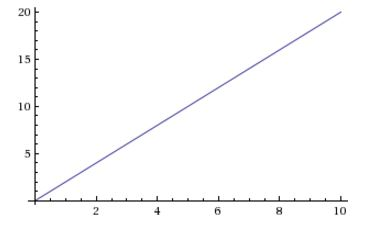
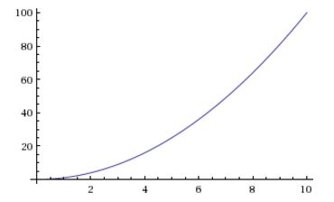

Revision of maths we've done previously. This page will be subject to frequent addition and error correction!
Yesterday I had the urge to try and write up differentiation from first principles, something I'm learning. I'm putting it here, partly to prompt me to flesh it out!
Differentiation from First Principles
Differential calculus and hill climbing.
//prerequisite ideas - linear graphs, basic algebra, what is a function? <- make these to be links
Maths, to me, is a science that looks for two things: patterns and relationships. Dr Keith Devlin does a beautiful job of explaining this in his course - Introduction to Mathematical Thinking.
Differential calculus is about looking for one of these relationships - a function to describe the gradient of a hill that keeps changing. I use hills here as they're easy to see and are the most commonly used analogy for graphs of functions.
In daily life, your average hill is fairly innocent, it simply lifts you up by maybe a meter for every 2 or 4 meters you walk forwards. You can predict what they are going to do purely with a single ratio - 1:2, 1:4 - and so on. Graphs of these hills look like this: //insert graph here.// and can be created with a simple function like y = 2x (y is usually used to go up, x go forwards).
//insert note about functions//
However if you get a somewhat more complicated hill, it's gradient is a little more secret. If you are given a hill that was created with a function like y=x^2 then you no long see an easy straight line but curved one.
Here you won't get a single ratio - in fact the ratio keeps changing.
However, the speed at which this ratio keeps changing IS predictable. If you can find the function that gives you what the ratio is, then predicting the ratio becomes as simple as putting X into your new function and seeing what the resulting number is.
Your looking for the difference in the change in y vs the change in x - in other words, a differential.
If you look at the graph, what we are really doing is working with the difference in y vs the difference in x - however we need to do this repeatedly, reducing the distance each time to try and get a more accurate difference. In other words, we are zooming into the graph until the graph is virtually straight.
Can you recall what a simple line graph is like? This is where y = 2x, so for each step forwards, you climb 2 steps up.
Calculus is partly about what happens when how far you climb up for each step keeps changing. So, $$y=x^2$$
Can you remember what this is?
$$f(x)= nK^{n-1} $$
It's the power rule from differential calculus. We are saying if our function is $$6x^4$$ then n = 4 and the ratio of the rate of change at any point is: $$f(x)=24x^{3}$$ So if you pick a point on a graph, say x = 2, the ratio of rate of change at this precise point is $$48^3$$